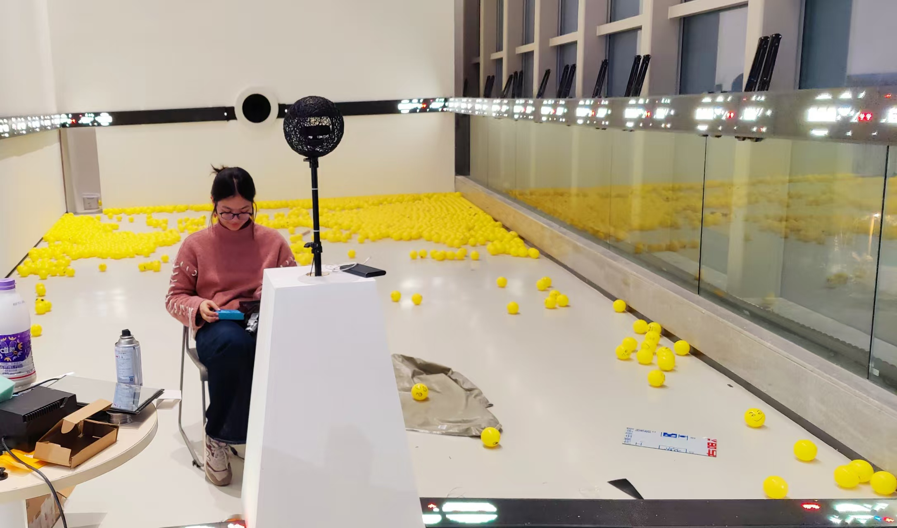
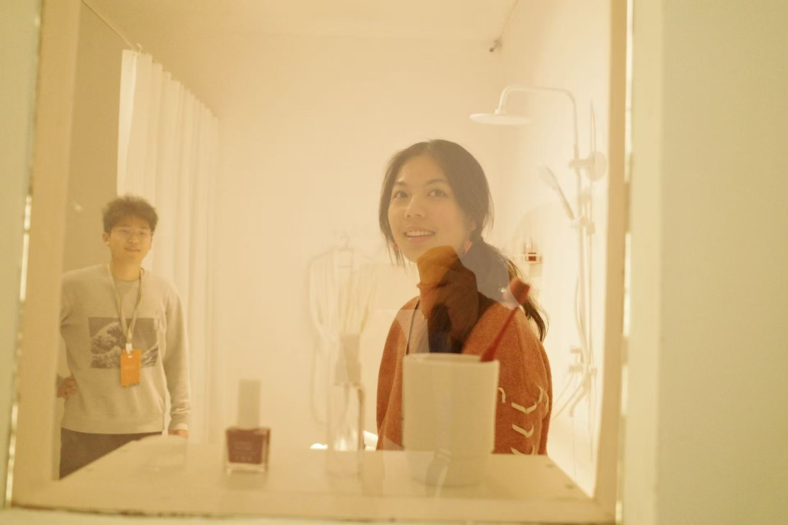
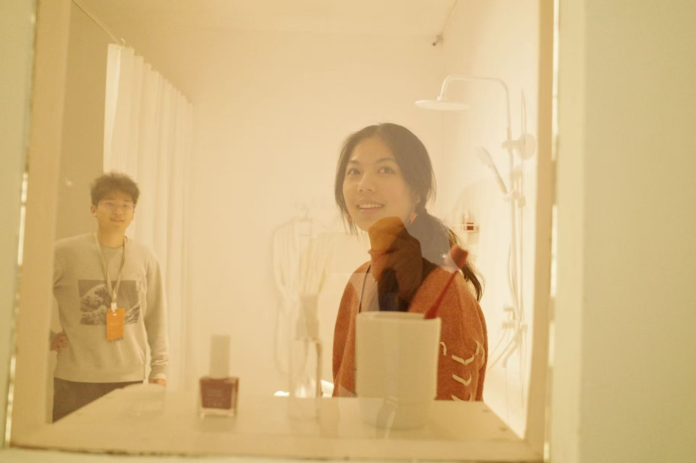

This work captures participants' facial expressions in real time and “absorbs” them into a visualized emotional black hole. Once accumulated intensity exceeds a threshold, a 3D emoji erupts outward as a symbolic emotional overflow.
How a perfect collaboration begins
Category: Thoughts and reflections · Tools: servo motor,ML · Year: 2024

Six Pieces of a Puzzle
This was the only collaboration in my four years of university that I would call “perfect.”
The six of us were like six puzzle pieces cut into completely different shapes, each with its own edges and colors. At the beginning, none of us could have predicted that we would fit together so seamlessly.
Zhang was our technical core. When he coded, there was a craftsman-like calmness about him—the rhythm of his keystrokes felt like someone patiently carving wood. He handled the complex logic and underlying architecture that held everything together. He was balanced by He, who took care of everything aesthetic. Her sense of color and composition was uncanny. It often felt as if she could reach directly into the vague images in our heads and translate them into clear visual language. Another teammate, also surnamed He, had a talent for operations and logistics. She organized budgets, reimbursements, and forms in a way that made the messiest processes look almost elegant. Zhao, on the other hand, was our “atmosphere regulator.” Whenever discussions grew tense or stalled, he could break the stiffness with a single joke, giving everyone space to breathe and think again. Looking back, what made this collaboration work so well was not just that our roles were clearly defined. It was that, somewhere along the way, we built an unusual kind of trust.
From Friction to Flow
Disagreements, of course, were never in short supply. We argued over design directions, feature priorities, and implementation details. But we slowly formed a shared, unspoken rule: we could be sharp about the issue, but we tried our best not to be sharp with each other.
Ideas were placed on the table like raw material. We cut them, sanded them, and hammered at them together—not to prove who was right, but to see how far we could push the work toward something better.
The time we spent outside of “work” turned out to be just as important.
We squeezed around crowded tables in the cafeteria, bowls of steaming food between us; we played badminton in the fading light, watching the shuttlecock draw long arcs against the evening sky. During those moments, the project quietly stepped aside, and what grew instead was a light, unforced kind of friendship.
That friendship spilled back into the project. It made us more patient in discussions, more willing to explain one more time, more ready to believe that if someone insisted on a point, there was probably a good reason behind it.

What I Learned About Collaboration
This experience became a mirror for how I now understand collaboration.
I used to think collaboration was mostly about division of labor—splitting tasks according to expertise so that the whole could run more efficiently. That project taught me something deeper: collaboration is not just about how work is arranged, but about how people choose to see and hold each other.
Real collaboration asks you to:
See not only each other’s strengths, but also each other’s limits and vulnerabilities.
Express your own ideas clearly, but stay genuinely open to being challenged.
Protect the quality of the work without damaging the quality of the relationships.
The hardest part is not finishing the project; it is keeping trust and movement alive when things get messy.
It requires a kind of flexible posture: to know when to stand firm and when to step back; when to argue for your idea and when to make room for someone else’s; when to push, and when to protect the team from being pushed too hard. At the time, we didn’t consciously name any of this. We just did what felt right. Only later did I realize that this flexibility was the quiet backbone of our so-called “perfect” collaboration.

The Quiet Kind I Want to Practice
This collaboration also changed how I understand leadership.
Before this, I imagined leadership as something visible: planning the roadmap, assigning tasks, keeping everyone on track. But in this group of six, I began to see leadership as something more subtle.
Leadership, I realized, is not about making your voice the loudest in the room. It is about making the room big enough for more voices to be heard. It is not about always having the final say, but about creating the conditions for better decisions to emerge.
A good leader doesn't just move the project forward; they help the people involved stand more steadily.
Later, when I led cross-disciplinary teams—working with art students on interactive installations, or coordinating volunteers who care for autistic children—I kept returning to the lessons from this project. I listened more carefully. I tried to speak with more precision and less ego. I paid attention not only to timelines and deliverables, but also to people’s energy and emotional state.
I learned that leadership can look very quiet from the outside. It can be as simple as asking one more question, noticing who hasn’t spoken yet, or choosing to hold the tension of a disagreement without letting it turn into a fracture. It is not about being the hero of the story, but about making sure the story can keep going.

What Stayed
On the day we celebrated the end of the project, none of us said anything particularly dramatic. We ate, we laughed, we made a few half-serious promises to collaborate again “one day.” And then, gradually, we drifted back into our separate lives.
But something had already shifted.
Those six puzzle pieces would eventually travel to very different places, each becoming part of a larger life map. Yet that brief period when we fit so tightly together left a lasting mark on me. The warmth, the confidence, and the sense of “we can handle this together” have quietly become part of my default settings whenever I walk into a new team.
We handed in a project and received a high grade. But what I really took away was a living, breathing example of what collaboration can be at its best—and the kind of teammate, and leader, I hope to be in the future.
(GPT performed)
Gallery
 
